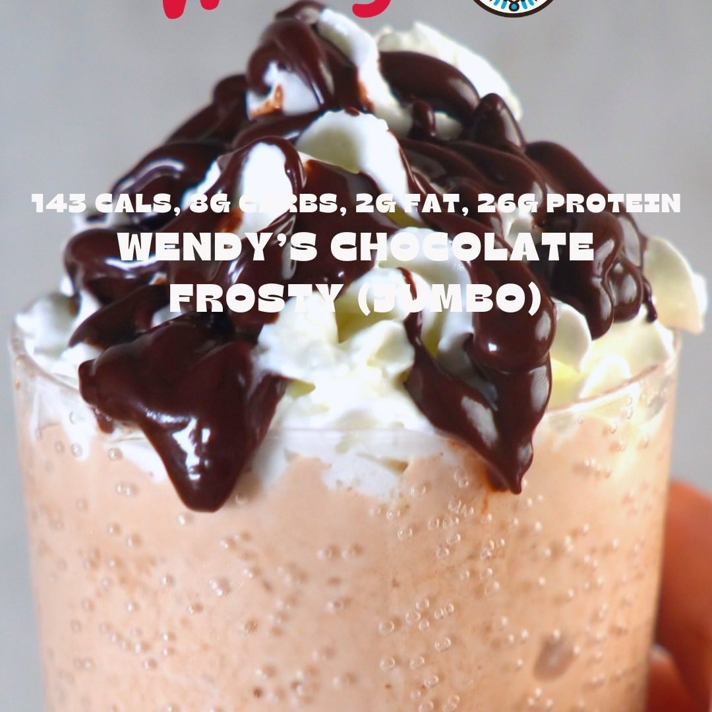

Frosty Wendys
Ingredientes:
Ingredientes para la primera mezcla:
- 500g o 2 tazas de hielo
- 120mL o 1/2 taza de leche sin grasa (usé Kroger Carb Master)
- 113g o 1/2 taza de yogur griego natural sin grasa
- 1g o 1/2 cucharadita de sal
Ingredientes para la segunda mezcla:
- 1.5 Scoops de proteína de chocolate en polvo
- 20g o 5 cucharadas de edulcorante granular (usé Swerve)
- 7g o 1 cucharada de mezcla de pudín sin azúcar/sin grasa de chocolate o vainilla
- 5g o 1 cucharada de cacao en polvo
- 1g o 1/2 cucharadita de goma xantana
- 1g o 1/2 cucharadita de goma guar
Ingredientes para los toppings (opcional):
- Crema batida
- Sirope de chocolate sin azúcar
Instrucciones:
- Toma una licuadora grande (preferentemente Ninja). Si tienes una licuadora pequeña, reduce a la
mitad los ingredientes de la receta.
- Añade los ingredientes de la primera mezcla. Licúa durante un minuto a alta velocidad.
- Añade los ingredientes de la segunda mezcla a la licuadora. Licúa por otro minuto a alta velocidad.
- Toma dos vasos grandes y sirve el Frosty mezclado. Agrega los toppings (*opcional*) y disfruta.